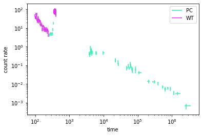

Intro
This is a simple tool to allow scripting of the awesome XRT website. The official API (which does a lot more) can be found here.
These tools extend the functionality a bit.
[1]:
%matplotlib inline
from xrt_spec_dl import XRTLightCurve, download_xrt_spectral_data
Downloading Spectra
This allows you to download time-sliced spectra for spectral analysis. You can choose PC or WT mode.
[2]:
obs_id = "01071993"
grb = "210905A"
[3]:
download_xrt_spectral_data(
obs_id=obs_id,
name=f"GRB {grb}",
mode="PC",
tstart=239,
tstop=446,
destination_dir=".",
)
!ls
[INFO ] requesting build...
[INFO ] sleeping 30 seconds ...
[INFO ] requesting https://www.swift.ac.uk/xrt_spectra/tprods/SLICE_01071993_20.114.193.166_ChTW7PJz3/ ...
[INFO ] sleeping 30 seconds ...
[INFO ] sleeping 30 seconds ...
[INFO ] sleeping 30 seconds ...
[INFO ] sleeping 30 seconds ...
[INFO ] sleeping 30 seconds ...
[INFO ] sleeping 30 seconds ...
[INFO ] sleeping 30 seconds ...
[INFO ] sleeping 30 seconds ...
[INFO ] sleeping 30 seconds ...
[INFO ] downloading: https://www.swift.ac.uk/xrt_spectra/tprods/SLICE_01071993_20.114.193.166_ChTW7PJz3/xrt.tar.gz
GRB_info.txt _stub apc.arf apc.rmf apcback.pi docs.md xrt.tar.gz
README.txt a.areas apc.pi apc_fit.fit apcsource.pi models
Downloading Light curves
To get the light curve data for plotting purposes, we need to know the obs_id of the GRB. the class will look at the Swift data online and pull it for making plots. In the future, a cache options will be included for off-line use.
[4]:
lc = XRTLightCurve(obs_id=obs_id)
The WT and PC data exist as astropy tables.
[5]:
lc.wt_data
[5]:
Table length=144
| time | time_perr | time_nerr | rate | rate_perr | rate_nerr | bkg | bkg_err | fracexp |
|---|---|---|---|---|---|---|---|---|
| float64 | float64 | float64 | float64 | float64 | float64 | float64 | float64 | float64 |
| 98.6 | 0.494 | -0.587 | 46.12369 | 6.87576 | -6.876381 | 0.0 | 0.0 | 1.0 |
| 99.793 | 0.649 | -0.699 | 37.26021 | 5.603942 | -5.604468 | 0.5035006 | 0.5035006 | 1.0 |
| 101.143 | 0.645 | -0.7 | 36.53476 | 5.55801 | -5.558484 | 0.5048367 | 0.5048367 | 1.0 |
| 102.437 | 0.689 | -0.649 | 37.29176 | 5.559158 | -5.559588 | 0.0 | 0.0 | 1.0 |
| 103.504 | 0.48 | -0.379 | 58.05943 | 8.655026 | -8.655572 | 0.0 | 0.0 | 1.0 |
| 104.747 | 0.522 | -0.763 | 38.841 | 5.790096 | -5.790403 | 0.0 | 0.0 | 1.0 |
| 106.056 | 0.701 | -0.787 | 33.54494 | 5.000598 | -5.000809 | 0.0 | 0.0 | 1.0 |
| 107.234 | 0.497 | -0.478 | 49.62938 | 7.706306 | -7.706513 | 1.392896 | 0.984926 | 1.0 |
| 108.318 | 0.716 | -0.586 | 38.25407 | 5.702591 | -5.702744 | 0.0 | 0.0 | 1.0 |
| 109.571 | 0.641 | -0.537 | 40.87582 | 6.347078 | -6.34723 | 1.15304 | 0.8153224 | 1.0 |
| ... | ... | ... | ... | ... | ... | ... | ... | ... |
| 402.092 | 0.367 | -0.343 | 69.74111 | 10.3964 | -10.39647 | 0.0 | 0.0 | 1.0 |
| 402.756 | 0.357 | -0.298 | 75.61507 | 11.27204 | -11.27211 | 0.0 | 0.0 | 1.0 |
| 403.503 | 0.498 | -0.39 | 54.92238 | 8.355262 | -8.355314 | 0.7648364 | 0.7648364 | 1.0 |
| 404.439 | 0.381 | -0.438 | 60.49167 | 9.017574 | -9.017632 | 0.0 | 0.0 | 1.0 |
| 405.171 | 0.338 | -0.352 | 70.6357 | 10.74571 | -10.74577 | 0.9836565 | 0.9836565 | 1.0 |
| 405.8 | 0.315 | -0.29 | 81.84292 | 12.20043 | -12.20051 | 0.0 | 0.0 | 1.0 |
| 406.683 | 0.371 | -0.568 | 52.70102 | 7.856212 | -7.856261 | 0.0 | 0.0 | 1.0 |
| 407.448 | 0.306 | -0.395 | 70.62479 | 10.52813 | -10.5282 | 0.0 | 0.0 | 1.0 |
| 408.24 | 0.547 | -0.485 | 47.25271 | 7.188487 | -7.188536 | 0.6580304 | 0.6580304 | 1.0 |
| 409.253 | 0.494 | -0.466 | 51.53035 | 7.681699 | -7.681759 | 0.0 | 0.0 | 1.0 |
[6]:
lc.pc_data
[6]:
Table length=46
| time | time_perr | time_nerr | rate | rate_perr | rate_nerr | bkg | bkg_err | fracexp |
|---|---|---|---|---|---|---|---|---|
| float64 | float64 | float64 | float64 | float64 | float64 | float64 | float64 | float64 |
| 257.813 | 11.352 | -8.706 | 4.372901 | 0.9596635 | -0.9596635 | 0.00582634 | 0.00291317 | 1.0 |
| 279.741 | 9.483 | -10.576 | 4.819593 | 1.008855 | -1.008855 | 0.004369748 | 0.002522875 | 1.0 |
| 297.701 | 9.074 | -8.477 | 4.815297 | 1.076733 | -1.076733 | 0.0 | 0.0 | 1.0 |
| 315.513 | 8.813 | -8.738 | 4.834247 | 1.084184 | -1.084184 | 0.003329336 | 0.002354196 | 1.0 |
| 332.385 | 4.478 | -8.059 | 8.449322 | 1.697917 | -1.697917 | 0.009322149 | 0.004661075 | 1.0 |
| 342.069 | 4.822 | -5.207 | 18.21536 | 2.789353 | -2.789353 | 0.01748003 | 0.007136194 | 1.0 |
| 3826.069 | 53.282 | -44.503 | 0.4401046 | 0.09935974 | -0.09935974 | 0.00193411 | 0.0006447033 | 1.0 |
| 3927.847 | 66.841 | -48.496 | 0.3732826 | 0.08436416 | -0.08436416 | 0.001821987 | 0.0005761628 | 1.0 |
| 4028.385 | 18.957 | -33.697 | 0.8747612 | 0.1912754 | -0.1912754 | 0.0007982025 | 0.0005644144 | 1.0 |
| 4101.667 | 40.954 | -54.324 | 0.4606588 | 0.1038888 | -0.1038888 | 0.001764449 | 0.000623827 | 1.0 |
| ... | ... | ... | ... | ... | ... | ... | ... | ... |
| 211078.674 | 12890.825 | -23281.86 | 0.01366263 | 0.00278666 | -0.00278666 | 0.0005820454 | 4.399849e-05 | 0.072087 |
| 308026.999 | 18423.279 | -40412.385 | 0.01324905 | 0.002303208 | -0.002303208 | 0.0004166289 | 2.93139e-05 | 0.060386 |
| 393391.557 | 12736.906 | -5542.598 | 0.01059567 | 0.002160675 | -0.002160675 | 0.0004718114 | 3.058299e-05 | 0.175571 |
| 529458.552 | 38371.242 | -26029.145 | 0.007084353 | 0.001486265 | -0.001486265 | 0.0004642947 | 2.478222e-05 | 0.07444 |
| 622744.928 | 52784.773 | -27164.118 | 0.005327311 | 0.001427881 | -0.001427881 | 0.0002677566 | 1.696839e-05 | 0.050178 |
| 754403.214 | 59127.104 | -27683.452 | 0.006130641 | 0.001000429 | -0.001000429 | 0.0002468515 | 1.064253e-05 | 0.106461 |
| 896943.44 | 14565.847 | -9651.432 | 0.005536728 | 0.001371721 | -0.001371721 | 0.0001883713 | 1.215932e-05 | 0.191537 |
| 1138445.996 | 42882.962 | -61848.181 | 0.003389486 | 0.0007969945 | -0.0007969945 | 0.0005433904 | 1.888412e-05 | 0.085922 |
| 1418780.46 | 352287.473 | -181877.223 | 0.003075002 | 0.0005201644 | -0.0005201644 | 0.0003124656 | 7.748934e-06 | 0.03871 |
| 2570092.604 | 1007877.584 | -272644.863 | 0.0006538729 | 0.0002275809 | -0.0002275809 | 0.0001492451 | 3.738143e-06 | 0.020244 |
Finally, we can plot the data
[7]:
lc.plot(pc_mode=True, wt_mode=True)
[7]:


[ ]: